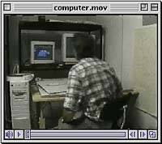

The new Shand Power Station near Estevan is addressing the acid rain problem with new emission reducing technology. A Limestone Injection into Furnace and Activation of unreacted Calcium (LIFAC) system controls sulphur dioxide emissions. Low NOX burners substantially reduce emissions of nitrous oxides. Since sulphur dioxide and nitrous oxides are precursors to acid rain formation, controlling their production and escape into the atmosphere will help control acid precipitation in Saskatchewan and the surrounding areas. |
Field and laboratory experiments have been conducted to study acid precipitation damage to leaves. Most of these experiments involve spraying of artificial precipitation solutions directly onto leaf surfaces. At extremely low pHs of less than 3.5, lesions (small areas of dead cells), pitting (holes in leaf waxes), and leaf curling can be induced. The degree of the damage often depends on such physical characteristics as the thickness of waxes present on the upper surface of the leaf. Plants with a thick coating of wax may be protected from acid precipitation damage because water droplets tend to roll off. In addition, the leaves of many species have inherent neutralizing or buffering ability. However, it has been shown that precipitations of low pH can actually dissolve surface waxes.
 Acid precipitation has also been linked to nutrient disturbances and changes in soil chemistry and damage to the root systems of forest trees. Studies have shown that if the pH of the soil solution reaches 4.0, heavy metals naturally present in an inert form in soil particles may be mobilized and become an active part of the soil solution. Aluminum, which is available in high concentration in soils derived from granitic bedrock, is one metal that can be activated in this way. Aluminum is toxic to plant root systems and may be responsible for death of the small feeder roots, which supply most of the water and nutrients required by the tree. |